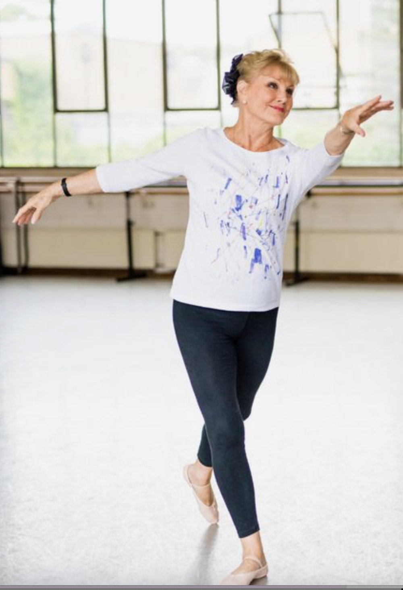

Efter din første time.
Føltes det både skønt og svært? Den første time kan give mange indtryk. Giv dig selv tid til at mærke efter - du behøver ikke vurdere hele din fremtid med ballet ud fra én oplevelse.
Tre spørgsmål til dig selv
- Var der et øjeblik hvor jeg nød musikken eller bevægelsen?
- Var der noget, der blev lidt lettere undervejs?
- Følte jeg mig velkommen og tryg ved at stille spørgsmål?
